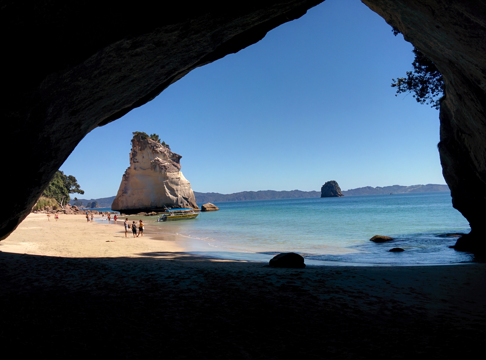
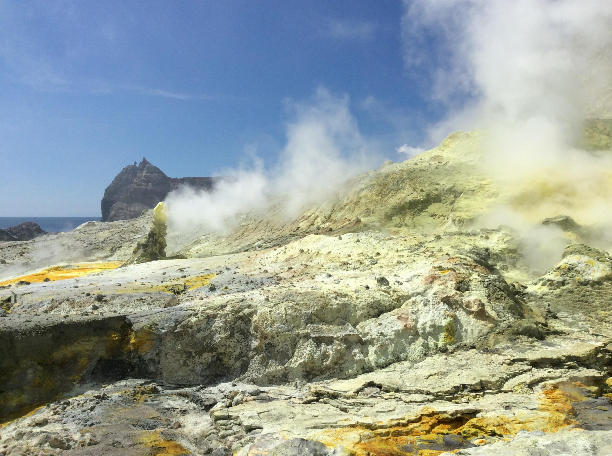
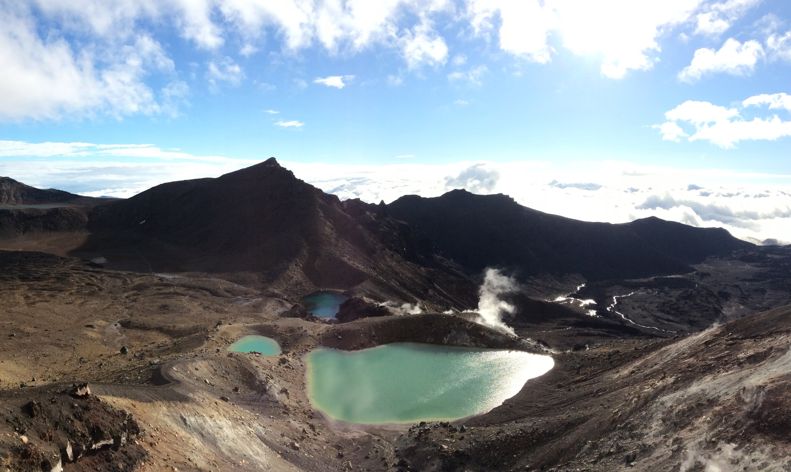
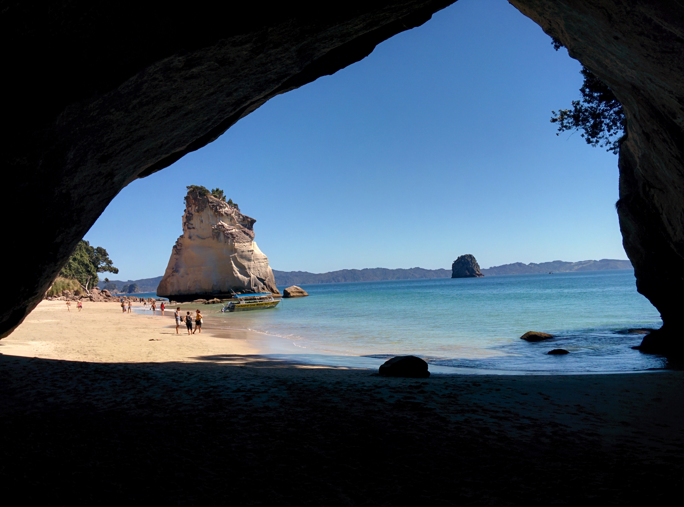
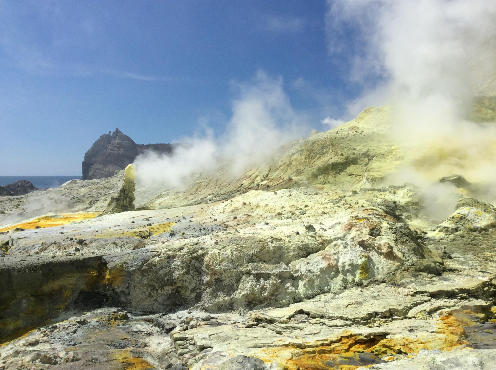
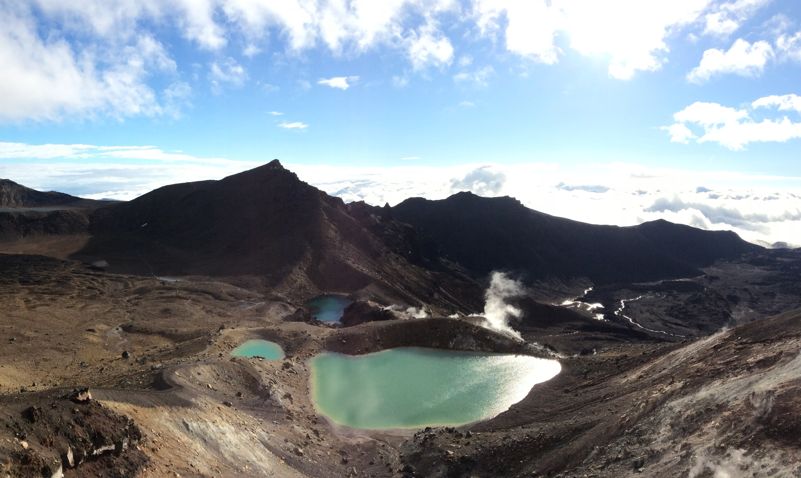

Top 5 Places
I started traveling on my own when I was 19 and so far have seen 24 contries.
In order to scratch a location off my list, I need to have left the airport and have spoken to a local.
In the list on the bottom of this page I stated all the places that didn't make the top 5.
I added the "short-connection" for places that I spent only 12 hours.


 







USA
States in the US that I have visited:
NY | NJ | Washington | California | Nevada | Mishagen |


- Bulgaria (Bansko)
- Cambodia
- Canada (Vancouver)
- czech-republic (Prague)
- Egypt (Sinai)
- Estonia (Tallinn)
- Finland (Helsinki)
- France (Paris) -short connection
- Georgia
- Greece (Rhodes)
- Hungry (Budapest)
- India
- Italy
- Mexico
- Netherlands (Amsterdam) -short connection
- Poland
- Turky(Istanbul)